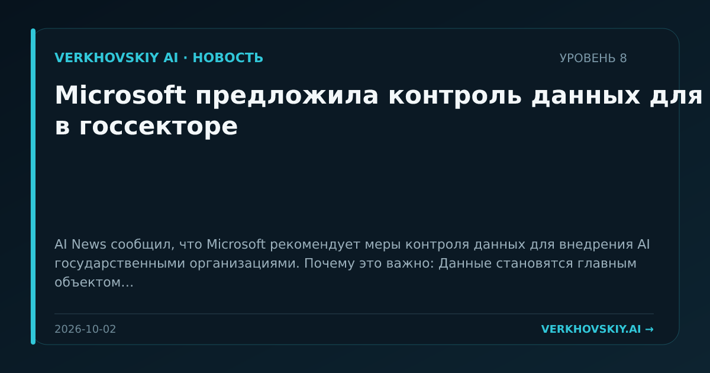

Microsoft предложила контроль данных для AI в госсекторе
AI News сообщил, что Microsoft рекомендует меры контроля данных для внедрения AI государственными организациями. Почему это важно: Данные становятся главным объектом доверия при государственном внедрении AI. Это усиливает спрос на управляемые контуры доступа, хранения и аудита.